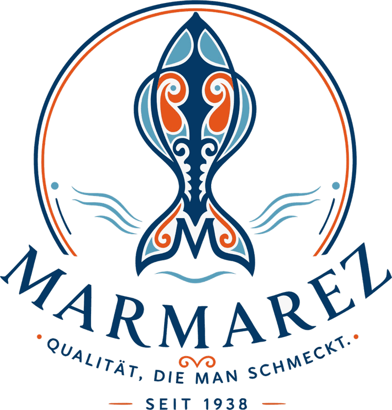

Seit 1938 steht Marmarez für fangfrischen Fisch, ehrliche Beratung und Qualität, die man schmeckt. Komm vorbei und such dir deinen Fisch direkt an der Theke aus.

Was 1938 als kleines Fischgeschäft begann, ist bis heute ein Familienbetrieb geblieben. Über Generationen weitergegeben wurde vor allem eines: das Gespür für wirklich guten Fisch.
Bei uns zählt, was schon immer gezählt hat – sorgfältige Auswahl, kurze Wege und eine Beratung, die sich Zeit für dich nimmt. Egal ob für das schnelle Abendessen oder das Festmenü.
Was in der Theke liegt, richtet sich nach Saison und Fang. Frag uns einfach, was heute besonders gut ist.
Am besten siehst du selbst, was heute frisch ist. Wir freuen uns auf deinen Besuch.